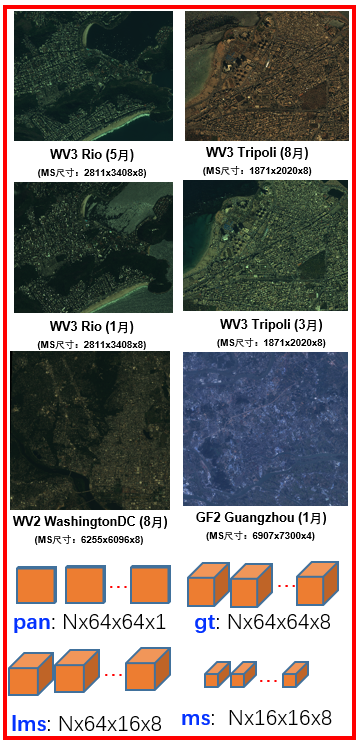
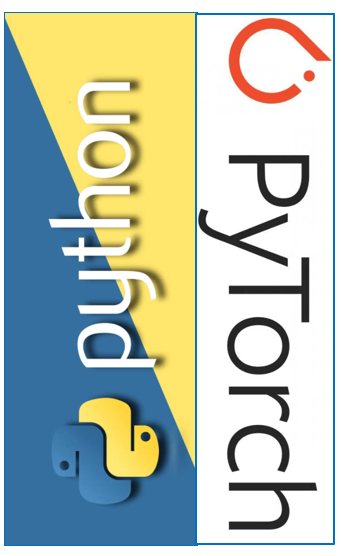
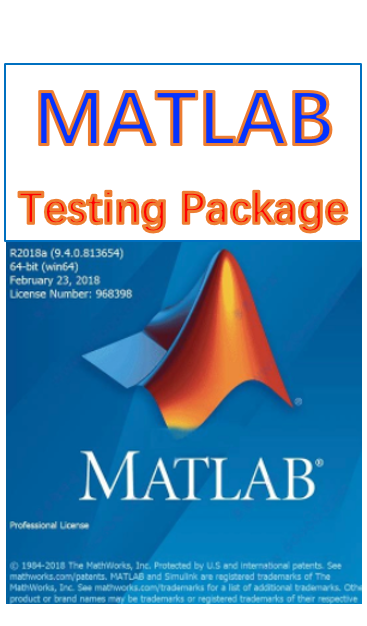

< Home
"PanCollection" for Remote Sensing Pansharpening
Liang-Jian Deng
本页面主要分享当前基于深度学习的遥感图像全色锐化的一些资源，如下： 1）发布相关卫星（如WorldView-3, QuickBird, GaoFen2，WorldView-2卫星）的全色锐化训练-测试数据集PanCollection； 2）发布基于Pytorch深度学习库的Python代码统一编写框架，便于后来学者的入门、开展研究以及公平比较； 3）发布统一的全色锐化传统-深度学习方法MATLAB测试软件包，便于后来学者进行公平的测试；

(1) PanCollection Dataset
(PanCollection 数据集)
WV3 Dataset
[1] Training Dataset(训练数据集)：
[Project1_Signal_Rec_ADMM]
[2] Testing Dataset(测试数据集)：
[Project2_K_Means_ToStudent]
QB Dataset
[1] Training Dataset(训练数据集)：
[Project1_Signal_Rec_ADMM]
[2] Testing Dataset(测试数据集)：
[Project2_K_Means_ToStudent]
GF2 Dataset
[1] Training Dataset(训练数据集)：
[Project1_Signal_Rec_ADMM]
[2] Testing Dataset(测试数据集)：
[Project2_K_Means_ToStudent]
WV2 Dataset
[1] Testing Dataset(测试数据集)：
[Project2_K_Means_ToStudent]

(2) Uniformed Pytorch Codes Framework
(统一的Pytorch代码框架)
Download via GitHub
[1] Download Link(下载链接)：
[Project1_Signal_Rec_ADMM]
[2] One example to illustrate details(一个简单示例，推荐通过此学习)：
[Project2_K_Means_ToStudent]

(3) Matlab Testing Package for Trad. & DL Methods
(传统方法-深度学习方法测试MATLAB软件包)
Download via GitHub
[1] Download Link(下载链接)：
[Project1_Signal_Rec_ADMM]
[2] One example to illustrate details(一个简单使用示例，推荐通过此学习)：
[Project2_K_Means_ToStudent]